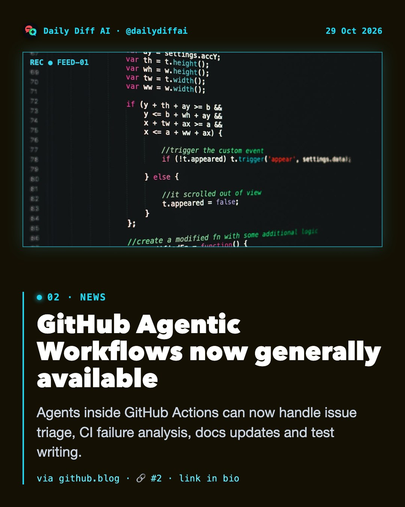
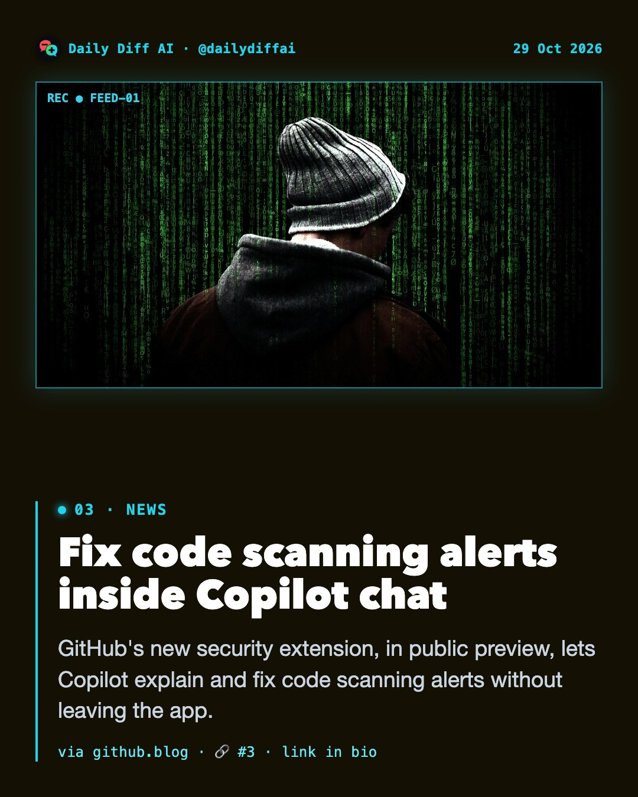
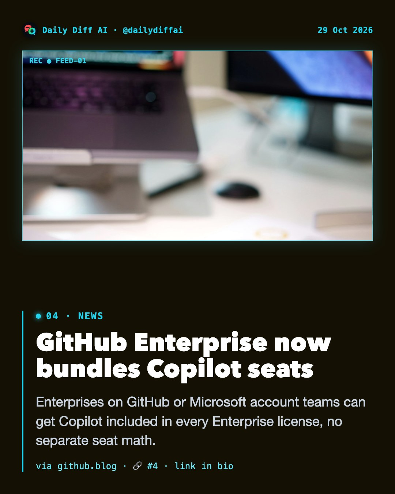
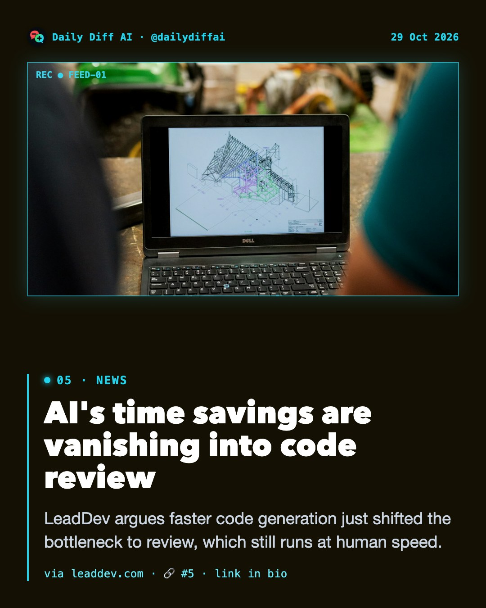
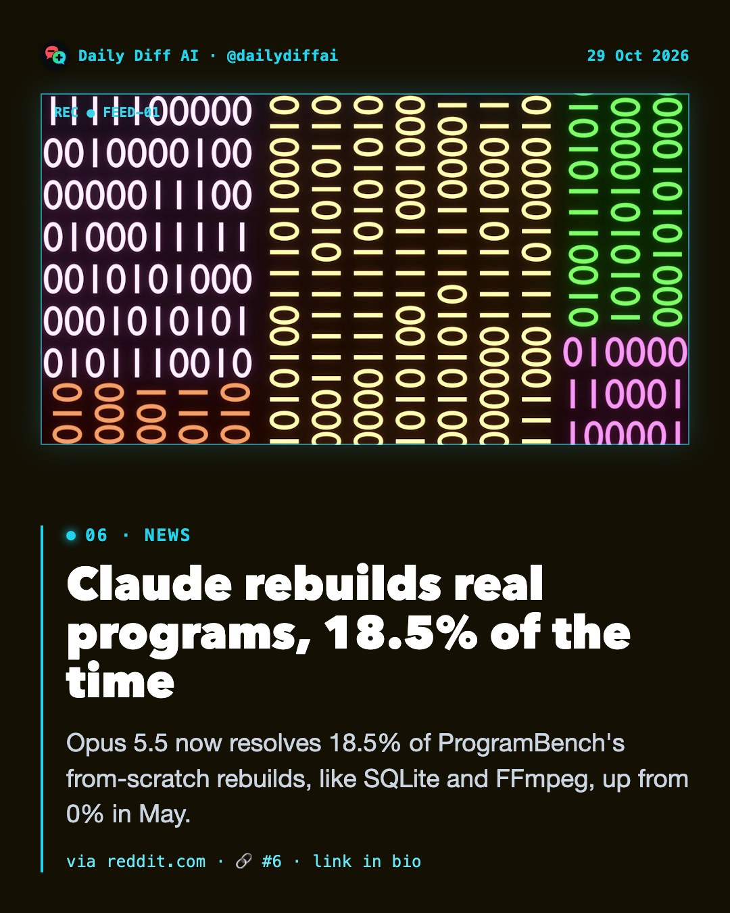
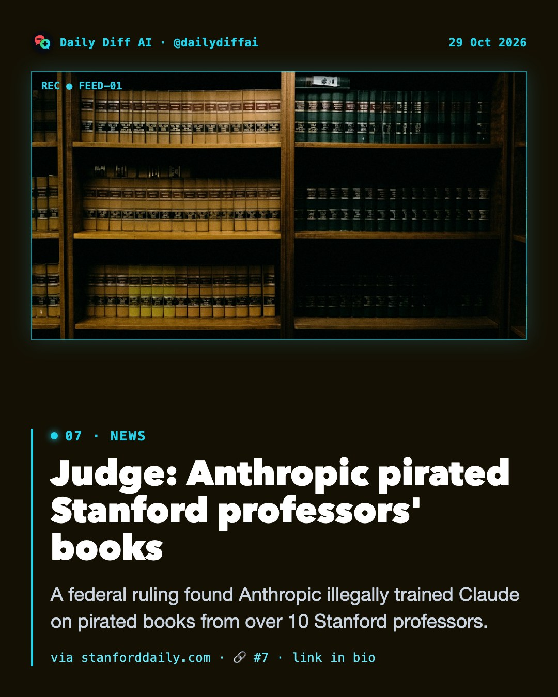
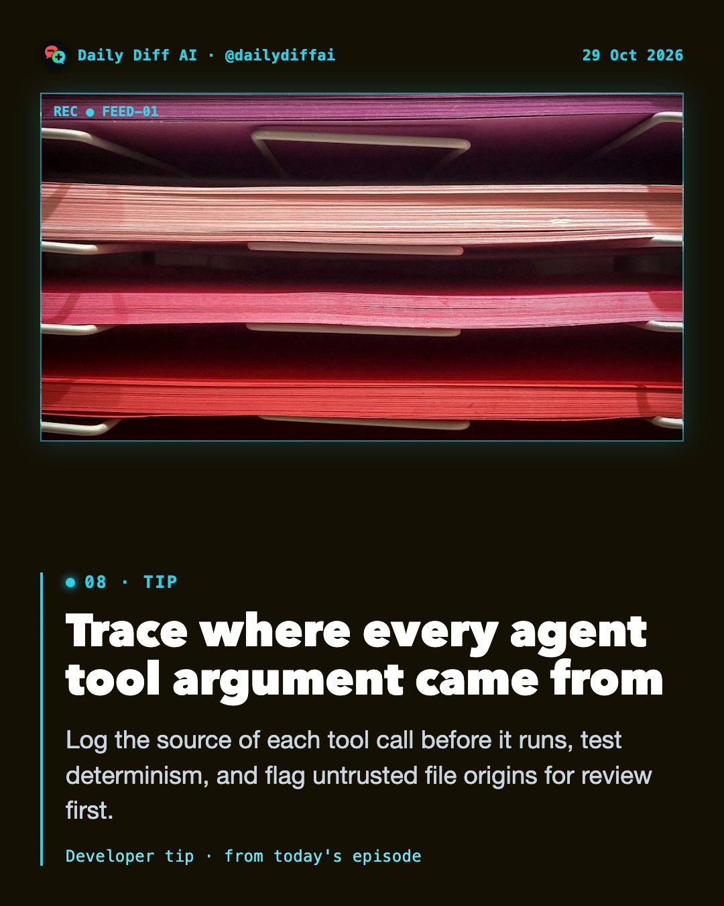

Daily Diff AI
Copilot Fusion goes GA, routes models for you
GitHub's Copilot Fusion scores 60 on Artificial Analysis's index, near Opus 5.5 Max, at half the cost and 40% less time.
Read on github.blog →
GitHub Agentic Workflows now generally available
Agents inside GitHub Actions can now handle issue triage, CI failure analysis, docs updates and test writing.
Read on github.blog →
Fix code scanning alerts inside Copilot chat
GitHub's new security extension, in public preview, lets Copilot explain and fix code scanning alerts without leaving the app.
Read on github.blog →
GitHub Enterprise now bundles Copilot seats
Enterprises on GitHub or Microsoft account teams can get Copilot included in every Enterprise license, no separate seat math.
Read on github.blog →
AI's time savings are vanishing into code review
LeadDev argues faster code generation just shifted the bottleneck to review, which still runs at human speed.
Read on leaddev.com →
Claude rebuilds real programs, 18.5% of the time
Opus 5.5 now resolves 18.5% of ProgramBench's from-scratch rebuilds, like SQLite and FFmpeg, up from 0% in May.
Read on reddit.com →
Judge: Anthropic pirated Stanford professors' books
A federal ruling found Anthropic illegally trained Claude on pirated books from over 10 Stanford professors.
Read on stanforddaily.com →
Trace where every agent tool argument came from
Log the source of each tool call before it runs, test determinism, and flag untrusted file origins for review first.